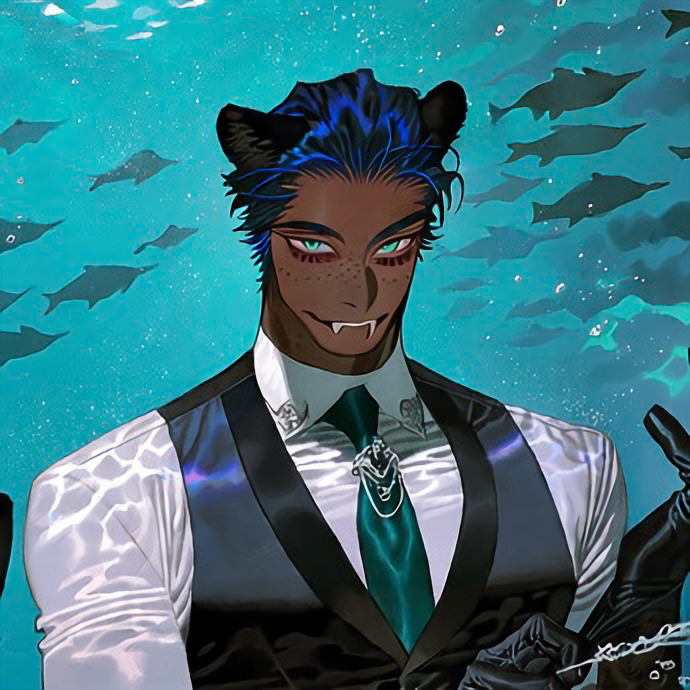

CHARACTER RECORD / 033STATUS: AVAILABLE

✦IMAGE
NOT FOUND
NOT FOUND
ヤグアル
✦ WITH OUTFIT服装込み
PROMPT DATATXT / 033
masterpiece, best quality, ultra detailed, intricate details, boy, adult male, kemono, anthropomorphic aquatic animal, non-human, 1.5::dark brown skin, muscular chest, broad shoulders, defined pectoral muscles, strong arms, athletic muscular physique::, 1.5::anthropomorphic black panther, feline ears, long black tail, feline muzzle, sharp fangs, digitigrade legs, black fur on ears and forearms::, 1.4::short slicked-back navy blue hair, subtle aqua highlights, pale turquoise eyes, slit pupils, long eyelashes::, 1.4::freckles scattered across nose, cheeks and shoulders, subtle spots across dark skin::,
1.5::formal black three-piece suit, tailored waistcoat, crisp white dress shirt, dark teal necktie, fitted dress trousers, polished black leather shoes::, 1.3::silver tie pin, elegant cufflinks, black leather gloves, ornamental pocket watch, translucent blue gemstone ring::, 1.5::composed expression, elegant demeanor, restrained confidence, mysterious aristocratic aura, refined masculine beauty::,
PROMPT NOT ENTERED